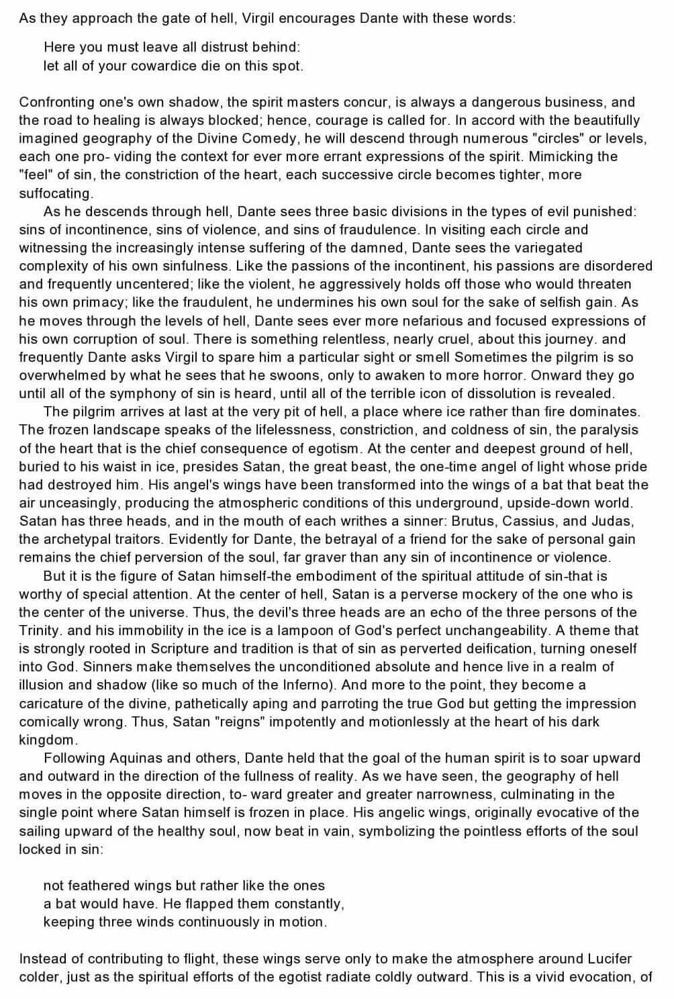
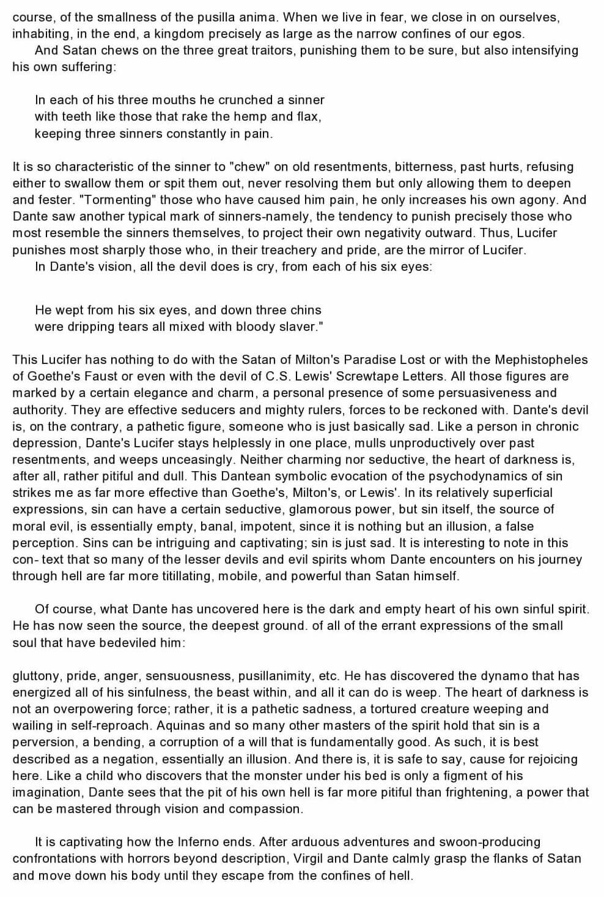
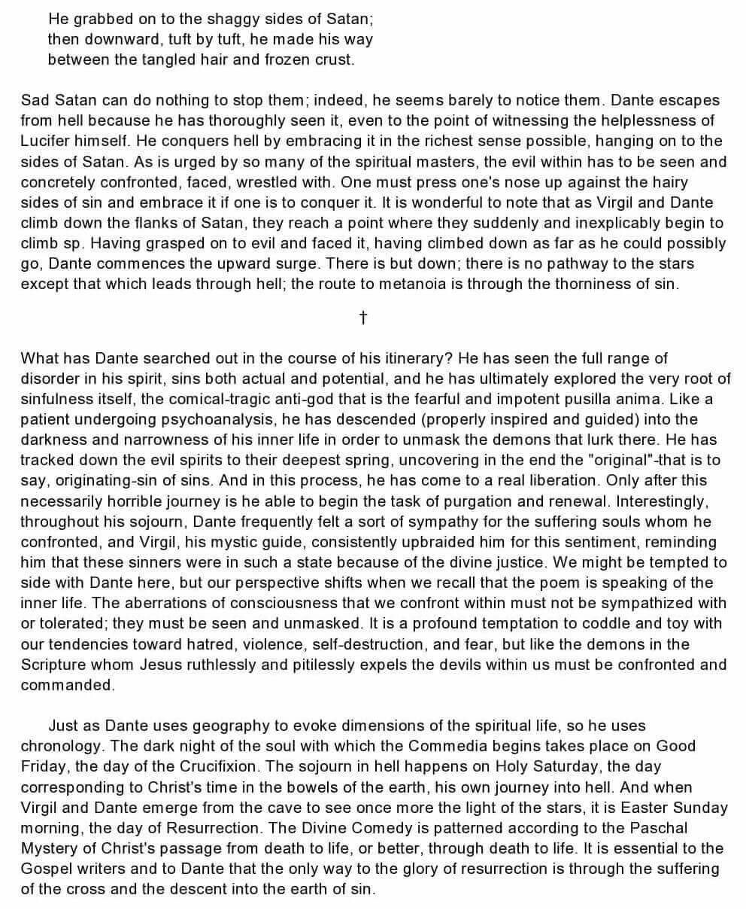
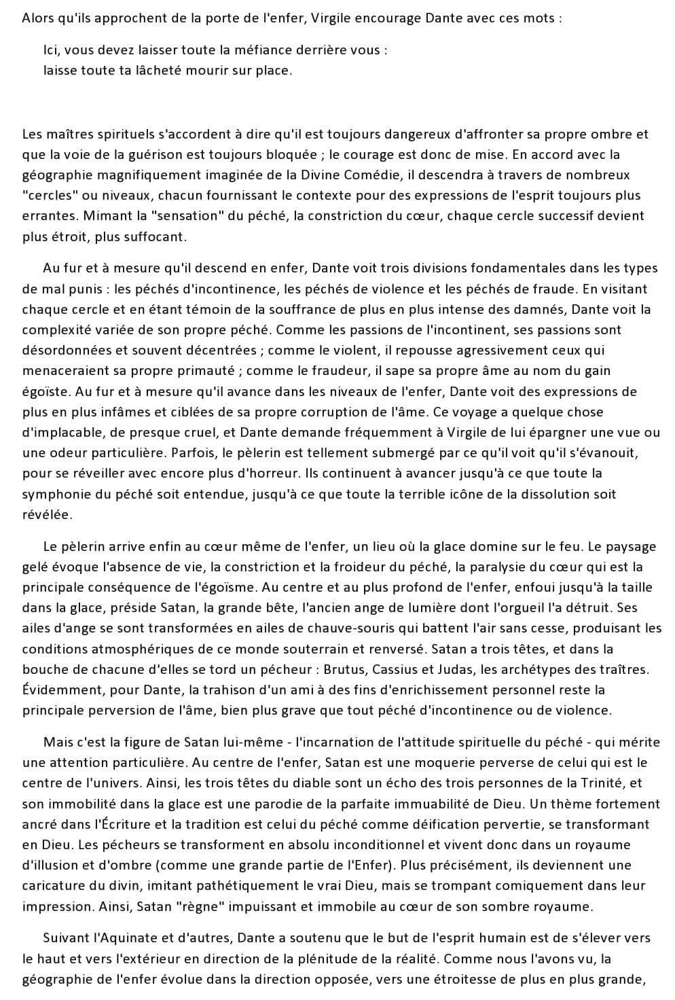
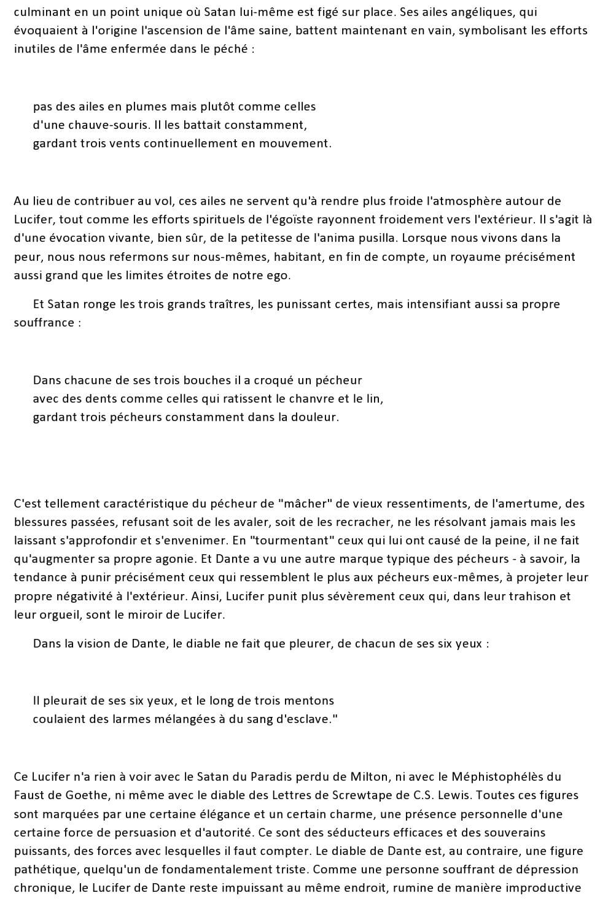
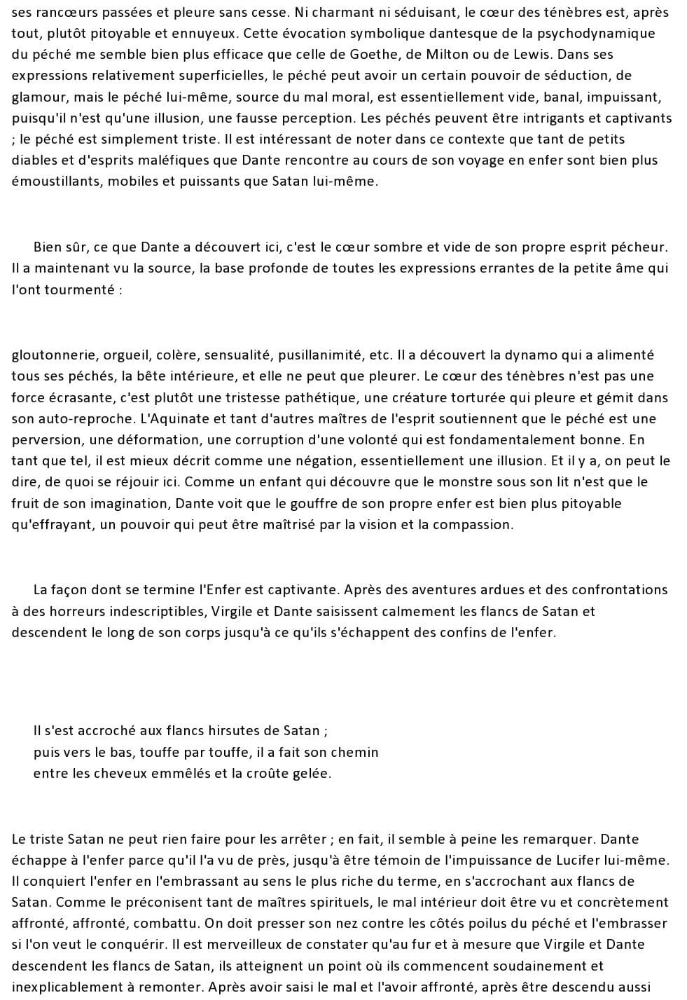

sainte-marie.ch
L'enfer de Dante

Le 1 février 2023
En plein lecture du livre "And now I see" de l'évêque de Winona-Rochester (Mgr. Robert Barron), j'ai trouvé un passage particulièrement attrayant. Il s'agit d'un résumé de l'enfer de Dante. Ci-dessous un extrait du livre que j'ai numérisé et plus bas une version traduite si vous ne parlez pas anglais.
Langue originale (Anglais)
Afficher
  Version traduite (français)
Afficher
  